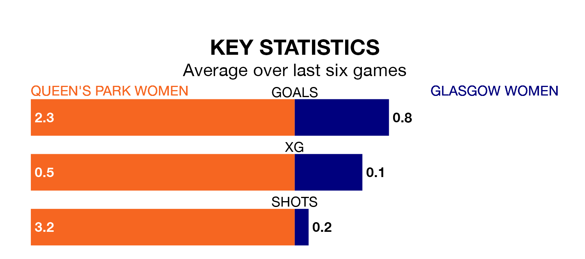

Queen's Park Women host Glasgow Women in Sunday's match at Lochinch Pavilion looking to bounce back from defeat last time out in SWPL 2.
Queen's Park, who sit top of the league after 15 games, fell to a 3-2 away defeat to Gartcairn Women on January 21.
They face a Glasgow side who picked up a win in their last match, a 2-0 victory against Boroughmuir Thistle, and who sit fifth in the table.
With 49 goals in 15 games so far this season, Queen's Park are the league's highest scorers with 3.3 goals per game. And they are conceding fewer than average, letting in 14 goals at a rate of 0.9 per game.
Glasgow, meanwhile, are below average scorers, with 1.0 goal per game, compared to a league average of 1.9. They have conceded 1.9 goals per game.
In the last 10 years, Queen's Park and Glasgow have played each other on nine occasions. They won four each, and they drew once.
On average, Queen's Park scored 2.0 goals and Glasgow 1.3 in those matches.
Their last meeting was on November 19, when Queen's Park won 5-0 away.
The hosts are in good form in SWPL 2, with four wins and a draw from their last six games.
With two wins and two draws over that period, the away side's form is worse – they have taken eight points from 18, compared to Queen's Park's 13.
Updated: 09:18 (UTC), 23/01/24